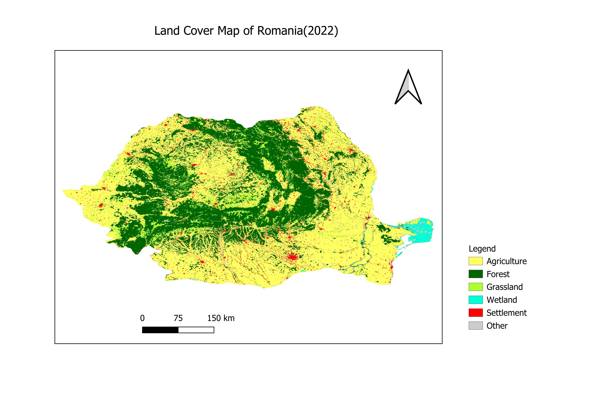
Romania Land Cover Map
ESA CCI Land Cover classification for Romania (2022)
ESA CCI Land Cover classification for Romania (2022)
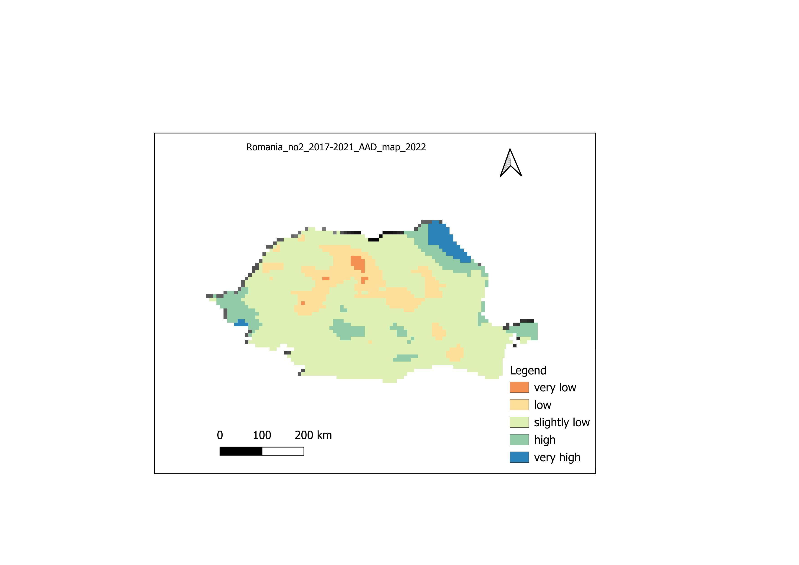
Romania NO₂ Annual Average Map (2017–2021)
Spatial distribution of NO₂ annual average concentrations (2022)
Spatial distribution of NO₂ annual average concentrations (2022)
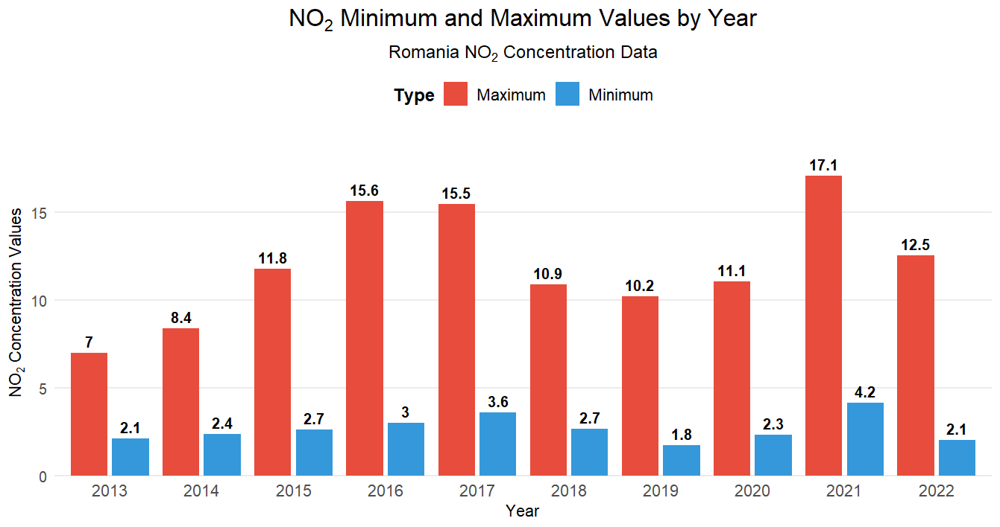
NO₂ Concentration Bar Chart
Distribution of NO₂ concentration classes across Romania
Distribution of NO₂ concentration classes across Romania
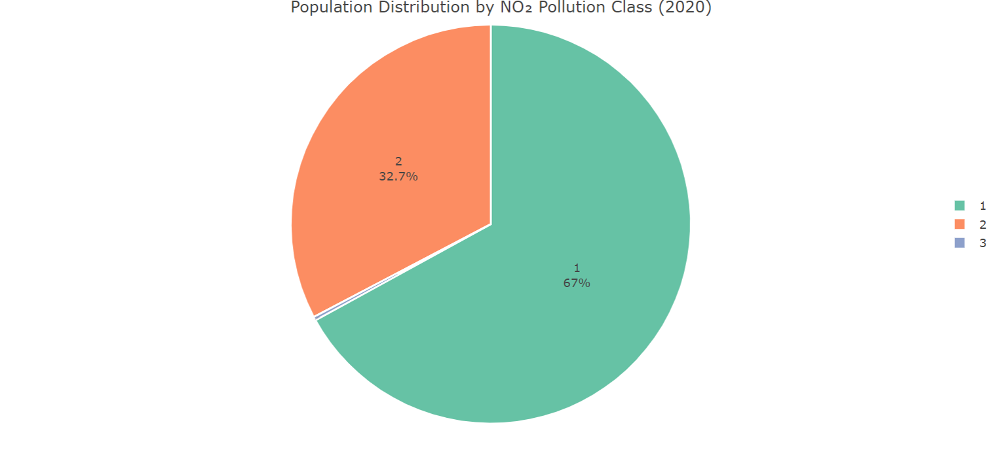
NO₂ Population Exposure Pie Chart
Population exposure to NO₂ levels by category
Population exposure to NO₂ levels by category
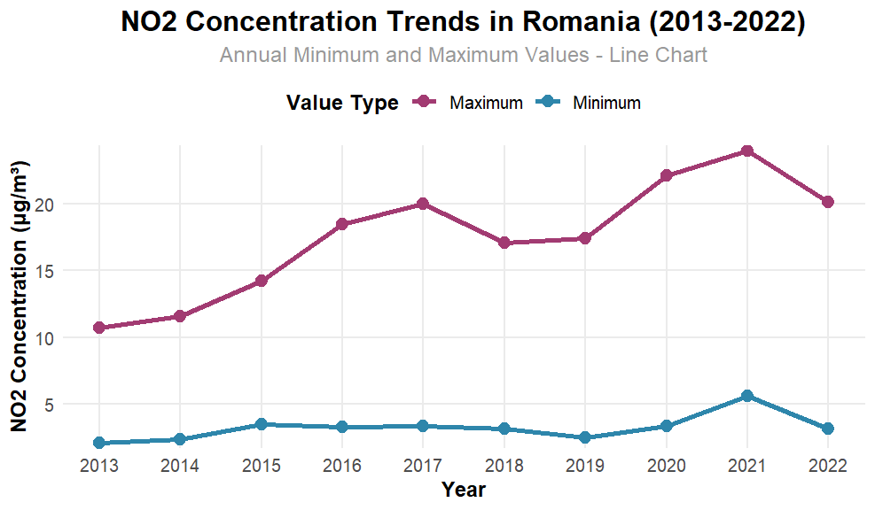
NO₂ R Plot
Statistical visualization generated in R (Rplot.png)
Statistical visualization generated in R (Rplot.png)
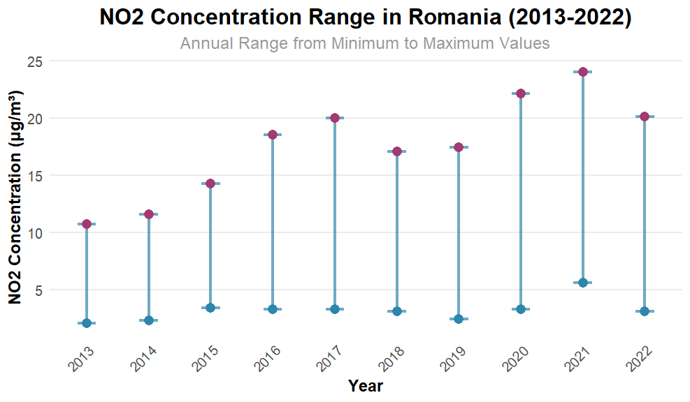
NO₂ R Plot 01
Statistical visualization generated in R (Rplot01.png)
Statistical visualization generated in R (Rplot01.png)

PM₁₀ Bar Chart
Distribution of PM₁₀ concentration classes across Romania
Distribution of PM₁₀ concentration classes across Romania
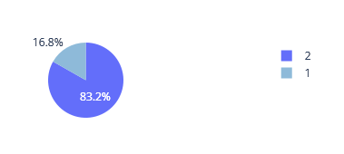
PM₁₀ 2020 Chart
PM₁₀ concentration chart for Romania (2020)
PM₁₀ concentration chart for Romania (2020)
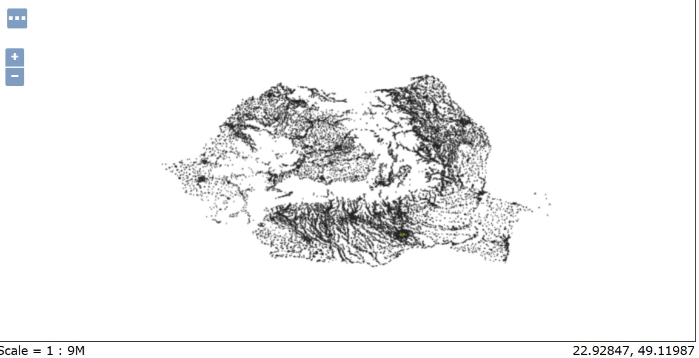
PM₁₀ Zonal Statistics (2013)
Zonal statistics of PM₁₀ concentrations for Romania (2013)
Zonal statistics of PM₁₀ concentrations for Romania (2013)
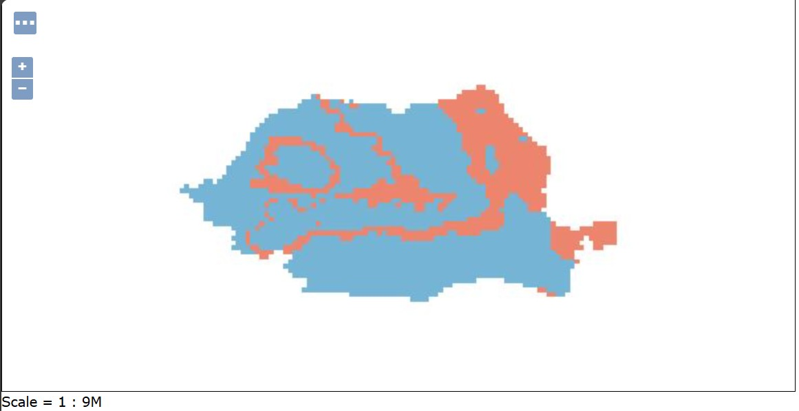
Romania PM₁₀ AAD Map (2017–2021)
Annual average daily PM₁₀ concentrations (2017–2021)
Annual average daily PM₁₀ concentrations (2017–2021)
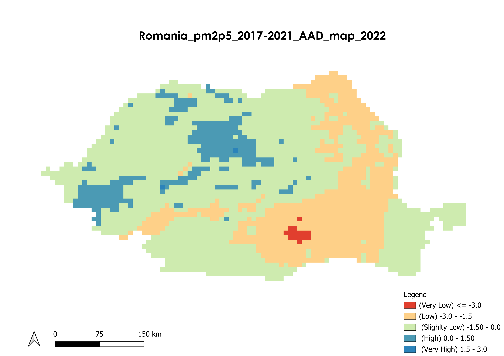
Romania PM2.5 Annual Average Map (2017–2021)
Spatial distribution of PM2.5 annual average concentrations
Spatial distribution of PM2.5 annual average concentrations
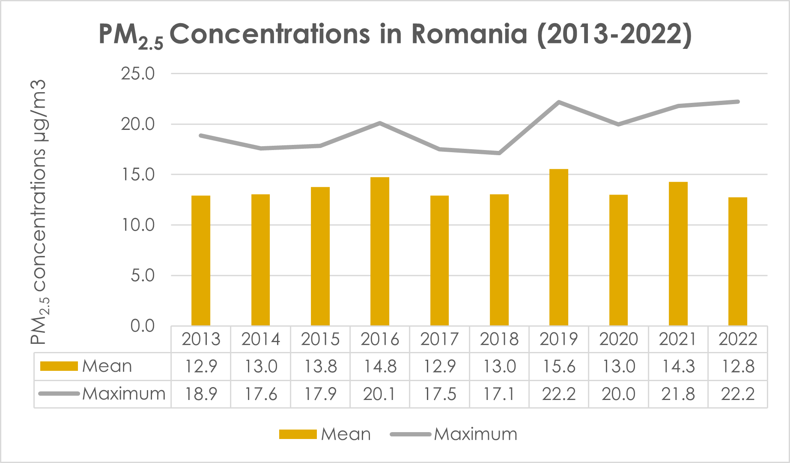
PM2.5 Concentration Bar Chart
Distribution of PM2.5 concentration classes across Romania
Distribution of PM2.5 concentration classes across Romania

PM2.5 Population Exposure Pie Chart
Population exposure to PM2.5 levels
Population exposure to PM2.5 levels
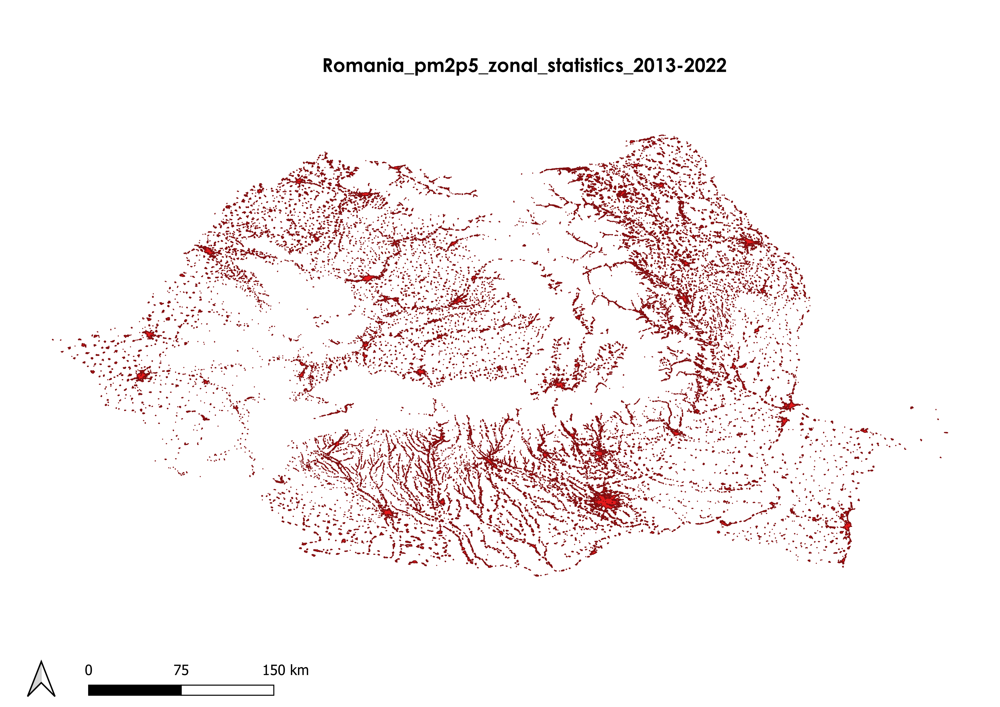
PM2.5 Zonal Statistics
Distribution of Zonal statistics of PM2.5 concentrations for Romania
Distribution of Zonal statistics of PM2.5 concentrations for Romania
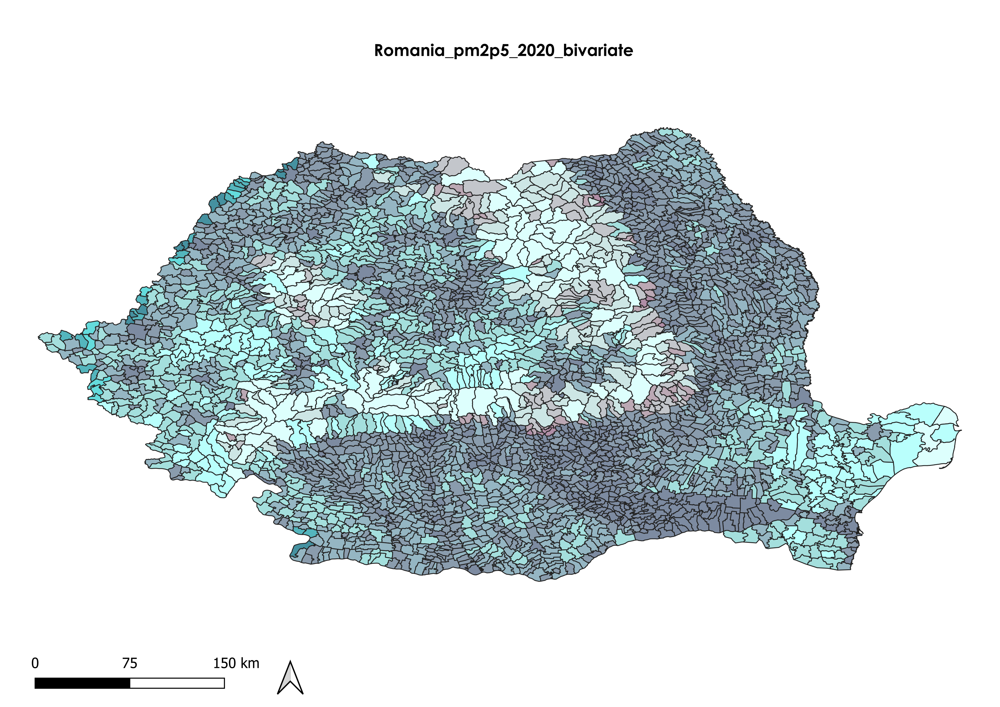
PM2.5 Bivariate Map
Distribution of PM2.5 w.r.t high pollution and pollution across Romania
Distribution of PM2.5 w.r.t high pollution and pollution across Romania